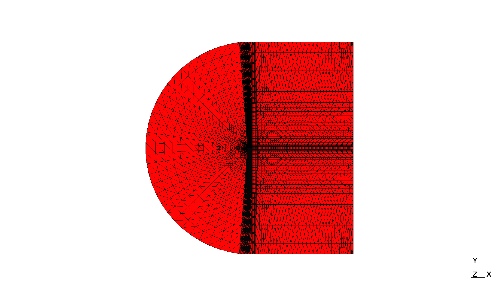
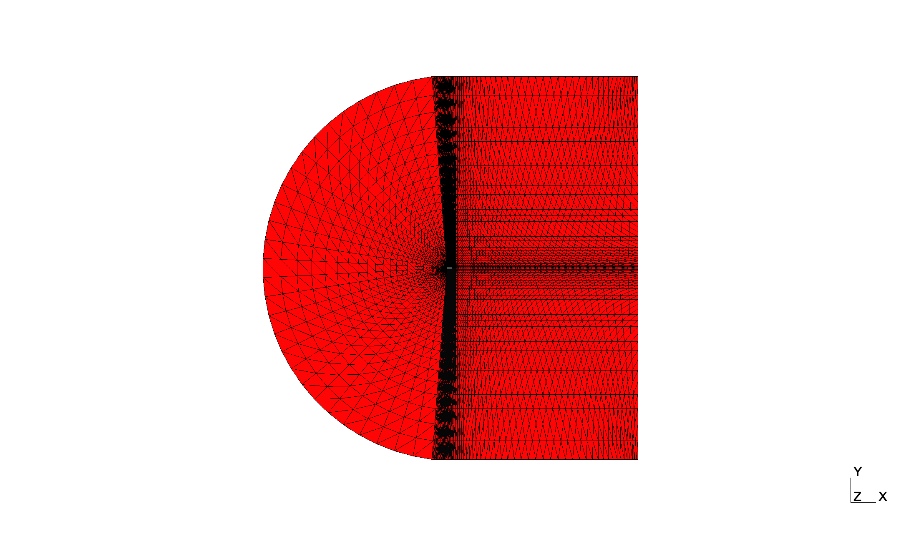

Welcome to AERO-Optim
AERO-Optim is a simple aerodynamic shape optimization framework coupling FreeForm Deformation (FFD), automatic meshing with gmsh and any CFD solver execution in the frame of an optimization algorithm based on inspyred or pymoo. It is composed of the following core components:
- Deform: which defines classes to perform FFD-based deformation of any 2D geometry,
- Mesh: which defines multiple classes to generate automatic meshes,
- Simulator: which defines a class to orchestrate CFD simulations including pre- and post-processing steps as well as progress monitoring,
- Optimizer and Evolution: which define multiple classes to coordinate the optimization procedures with
inspyredorpymoo
The overall structure of the framework is illustrated on the Figure below:

In an optimization, classes are created from left to right based on the execution command and the configuration file. All components can be inherited and customized to meet any need and the righmost classes can be loaded and tested separately.
Quick Installation
AERO-Optim requires Python 3.10 or newer and comes with a few dependencies listed in requirements.txt and recalled below:
gmsh # to design and visualize meshes (MESH)
inspyred # optimization toolbox (OPTIM)
numpy # to manipulate geometries as arrays (FFD)
matplotlib # to visualize the generated deformed profiles (FFD)
pandas # to load simulation results (OPTIM)
pymoo # optimization toolbox (OPTIM)
scipy # to use quasi monte carlo samplers (FFD)
From the user's working directory, they can all be installed at once in a virtual environment with the following commands:
git clone https://github.com/mschouler/aero-optim.git
cd aero-optim
python3 -m venv .venv
source .venv/bin/activate
pip install -r requirements.txt
pip install -e .
Warning
The virtual environment must be sourced every time a new terminal is launched!
Note
So far, the framework was only installed and tested on MacOS and Linux platforms.
First Execution
The framework was designed to automate aerodynamic optimization which, in this case, consists in:
1) deforming a baseline geometry,
2) generating its associated mesh,
3) performing a CFD computation,
as many times as required to obtain a geometry maximizing/minimizing certain quantities of interest (QoIs).
Although the chaining of these steps is performed under the supervision of main_optim.py, the three subscripts presented below were introduced to facilitate each step's individual evaluation:
First FFD: auto_ffd.py
This script performs one or multiple FFD of the geometry passed as its input argument. For instance:
# from aero-optim to naca_base
cd examples/NACA12/naca_base
ffd -f ../data/naca12.dat -nc 2 -d "0. 0. 1. 1."

where the deformation vector is $$[D_{10}, D_{20}, D_{11}, D_{21}] = [0., 0., 1., 1.]$$ in lattice unit (see FFD).
First Mesh: auto_gmsh.py
This script generates a simple mesh parameterized according to its associated configuration file. For instance:
# from aero-optim to naca_base
cd examples/NACA12/naca_base
mesh --config=naca_base.json # left figure
cd ../naca_block
mesh --config=naca_block.json # right figure
 

First Simulation: auto_simulator.py
This script performs a single simulation according to its associated configuration file and mesh. For instance:
# from aero-optim to naca_base
cd examples/NACA12/naca_base
mesh -c naca_base.json
simulator -c naca_base.json -f output/naca_base.mesh
Wolf simulation provided that the user has access to the solver and that they have properly specified the path to the executable:
INFO:aero_optim.simulator.simulator:g0, c0 converged in 533 it.
INFO:aero_optim.simulator.simulator:last values:
ResTot CD CL ResCD ResCL x y Cp
1.799346e-08 0.152689 0.358267 7.271155e-16 2.169212e-15 NaN NaN NaN
>> simulation finished after 5.0141987800598145 seconds
"post_process" entry of the configuration file. The NaNs correspond to missing values due to the varying size of the extracted data.
Warning
In order for the command to pass, don't forget to fix the exec_cmd executable path in naca_base.json.
A zoomed view of the solution mach field plotted with vizir4 and the following command is given below:
# from naca_base
/path/to/vizir -in output/WOLF/wolf_g0_c0/naca_base.mesh -sol output/WOLF/wolf_g0_c0/mach.solb

Note
As of 2024, Wolf is not open-source and may not be available to the user. Customization guidelines on how to adapt any part of the framework such as the Simulator are given in the Customization tab.
First Optimization: main_optim.py
This script orchestrates an optimization execution given the configuration parameters. For instance, naca_base.json and the command below executes a single iteration of the Particle Swarm Optimization algorithm of inspyred with 5 candidates and 8 variables of design sampled in [-0.5, 0.5] (in lattice units):
# from aero-optim to naca_base
cd examples/NACA12/naca_base
optim -c naca_base.json --inspyred

Warning
Although inspyred considers the first generation as the 0th and allows to use max_generations=0, pymoo does not and max_generations cannot be less than 1.
Tip
In the configuration file, the budget entry corresponds to the number of simulation executed concurrently. It should hence be adapted to the amount of resources available to the user.